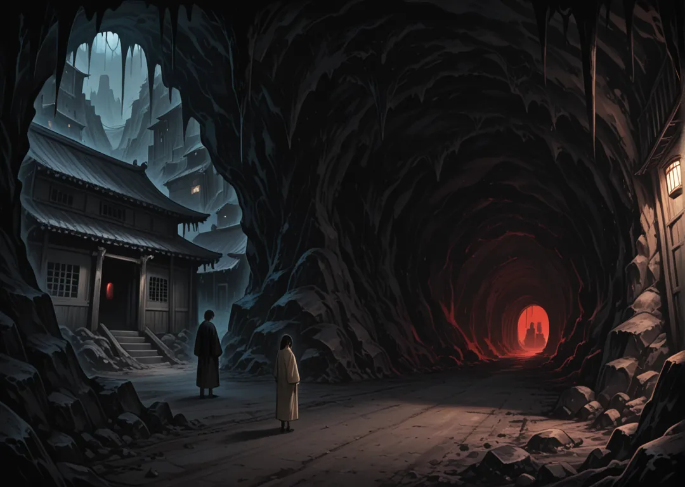

Mayores
Kobura (Cobra) · Taranchura (Tarántula) · Koomori (Murciélago) · Kamakiri (Mantis) · Sasori (Escorpión)
Y Yami, la oscuridad, que únicamente se sabe que está bajo tierra, en un complejo entramado de túneles, pero el resto de Yosai desconocen su ubicación. Anteriormente el país se llamaba Ichikoku, cuando era un único país unificado bajo el mandato del Yami Yosai (Fortaleza oscura), pero esto cambió para reflejar su caída y el cambio a la alianza de los nuevos Yosais. Al principio, Yami Yosai estaba en el centro de todo y era el núcleo del imperio, con todo bajo su mando, en una gigantesca ciudad-templo dedicada al Emperador Cobra (Kobura Tenno). Pero tras el ataque de las 4 fortalezas para liberarse de su yugo de dicha ciudad sólo quedan hoy ruinas y a nadie le gusta acercarse pues se dice que está guardada por los espíritus de los muertos (Shinigami).
La Fortaleza de Yami tuvo que exiliarse, buscando refugio bajo tierra, quedando oculta y proscrita al resto de Yosais. Sus miembros, especialmente los Kobura (Cobras), buscan venganza y volver a recuperar su antiguo poder.

Kobura (Cobra) · Taranchura (Tarántula) · Koomori (Murciélago) · Kamakiri (Mantis) · Sasori (Escorpión)
Mukade (Ciempiés) · Wamu (Gusano)
Fundación: Fundado hace 73 años por Taka, exploradora que cantó el primer Matsuri bajo la lluvia. Su emblema, una cobra encapuchada, recuerda la noche que Ichikoku cayó.
Hoy: Hoy Kobura sobrevive gracias a Kobura no Yuki, que habla con los muertos de Ichikoku. Quiere recuperar su aldea natal y ha jurado ayunar cada luna nueva. Koomori lo bloquea, pero Kamakiri podría mediar si los PJs intervienen.
Jutsu especial de Kazoku — Nivel 1 · 1 Ki · Dif. 9 (+1 PdJ de casa): Aguja Sombría — a distancia, Aguja 1d6+1 que ignora absorción (Ignora)
Fundación: Fundado hace 63 años por Kaito, capitán que trazó el mapa del Yosai a ciegas. Su emblema, una tarántula tejiendo, recuerda el pacto de las cenizas.
Hoy: Bajo Taranchura no Aoi (67 años, voz que calma tormentas), la casa busca encontrar la reliquia perdida tras el incendio del dojo. Necesita el apoyo de Koomori y teme a Kobura. Ofrece el perdón del Shogun a quien les ayude, aunque exige entregar a Kokoro como rehén.
Jutsu especial de Kazoku — Nivel 1 · 1 Ki · Dif. 9 (+1 PdJ de casa): Marca de Yami — a distancia, Marca que ve invisible 1d6 turnos (Visión)
Fundación: Fundado hace 193 años por Hiro, sacerdote que selló un pacto con el río Aoi. Su emblema, un murciélago colgando, recuerda el pacto de las cenizas.
Hoy: Tras el exilio de Yami, Koomori no Haru lidera Koomori hacia vengar a su Daimyo anterior. Carece de suficiente arroz y por eso busca Kamakiri. Ofrece el perdón del Shogun, pero el trato exige silencio absoluto.
Jutsu especial de Kazoku — Nivel 4 · 4 Ki · Dif. 12 (+1 PdJ de casa): Hambre del Abismo — a distancia, Vacío roba 2 PV y cura (Robar vida)
Fundación: Fundado hace 75 años por Taka, sacerdote que talló su emblema en la Caldera. Su emblema, una mantis rezando, recuerda el primer torneo bajo la lluvia.
Hoy: Hoy, bajo Daimyo Kamakiri no Taka, quiere comprar el silencio de un Ronin para recuperar su aldea natal. Su rival es Mukade y si los PJs les ayudan, obtienen tres noches de refugio seguro — pero el Shogun lo prohíbe.
Jutsu especial de Kazoku — Nivel 2 · 2 Ki · Dif. 10 (+1 PdJ de casa): Sombra Cosida — a distancia, Une sombra copia movimiento 1 turno (Incapacita)
Fundación: Fundado hace 61 años por Aoi, capitán que robó el fuego a Yami en la noche vieja. Su emblema, un escorpión de aguijón, recuerda el pacto de las cenizas.
Hoy: Hoy, bajo Daimyo Sasori no Mei, intenta casarse con un hijo de Kitsune para casar a su heredera con un Mayor. Su enemigo jurado es Kobura y si los PJs les ayudan, obtienen tres noches de refugio seguro — pero solo tienen hasta la próxima luna.
Jutsu especial de Kazoku — Nivel 1 · 1 Ki · Dif. 9 (+1 PdJ de casa): Paso Sombrío — toque, +2 Sigilo 1d6 min (Potenciar)
Fundación: Fundado hace 316 años por Ken, exploradora que fundó la fragua central con sus manos. Su emblema, un ciempiés ondulante, recuerda el primer torneo bajo la lluvia.
Hoy: Hoy, bajo Daimyo Mukade no Sora, ha jurado no volver a empuñar acero hasta vengar a su hermano para entrar al Consejo. Su competidor es Kamakiri y si los PJs les ayudan, obtienen el perdón del Shogun — pero el Shogun lo prohíbe.
Jutsu especial de Kazoku — Nivel 1 · 1 Ki · Dif. 9 (+1 PdJ de casa): Toque de Yami — toque, Toque frío 1d6 y roba 1 PK (Robar Ki)
Fundación: Fundado hace 127 años por Aoi, sacerdote que cantó el primer Matsuri bajo la lluvia. Su emblema, un gusano excavando, recuerda el pacto de las cenizas.
Hoy: Hoy Wamu sobrevive gracias a Wamu no Hiro, que colecciona máscaras rotas. Quiere entrar al Consejo y ha jurado no cortarse el pelo hasta lograrlo. Kobura lo bloquea, pero Kamakiri podría mediar si los PJs intervienen.
Jutsu especial de Kazoku — Nivel 3 · 3 Ki · Dif. 11 (+1 PdJ de casa): Manto de Sombras — toque, Invisibilidad 1d6 turnos (Invisibilidad)
Los PJs descienden a los túneles de Yami siguiendo un kunai con cabeza de serpiente —la misma de Karasu No Aki— y encuentran un diario de Koi.
Un Kobura arrepentido ofrece información a cambio de amnistía. ¿Es trampa o redención? Solo Reikon lo sabrá.
El Festival del Silencio se rompe: un niño grita un nombre prohibido y los Shinigami despiertan.
¿Yami busca venganza o redención? Un Kobura arrepentido ofrece el mapa de Shinkai a Tsuchi a cambio de perdón. Los PJs deciden si lo entregan.
Taranchura y Koomori disputan el liderazgo del Consejo de la Venganza. Cada uno pide a los PJs que eliminen al otro en secreto.
Mukade conoce todos los túneles y vende pasaje a Mizu, pero su hijo es espía en Minato. Si los PJs lo usan, exponen al hijo.